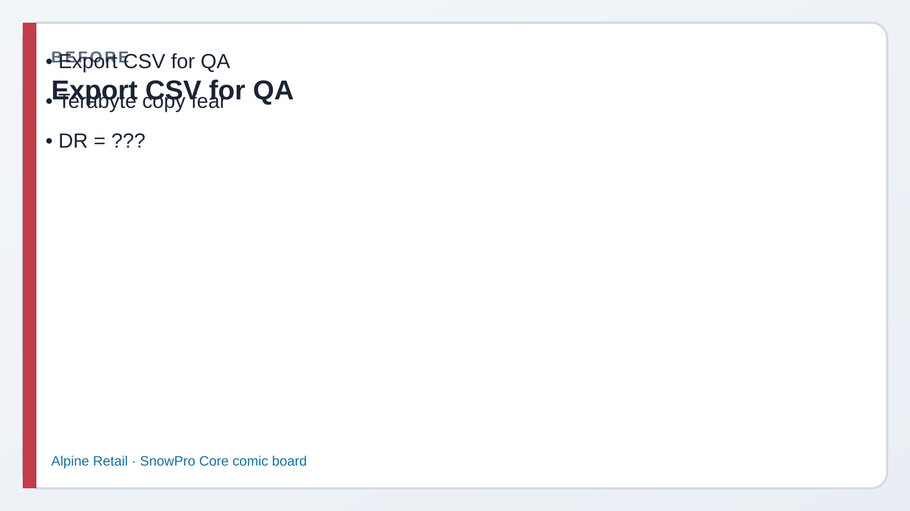
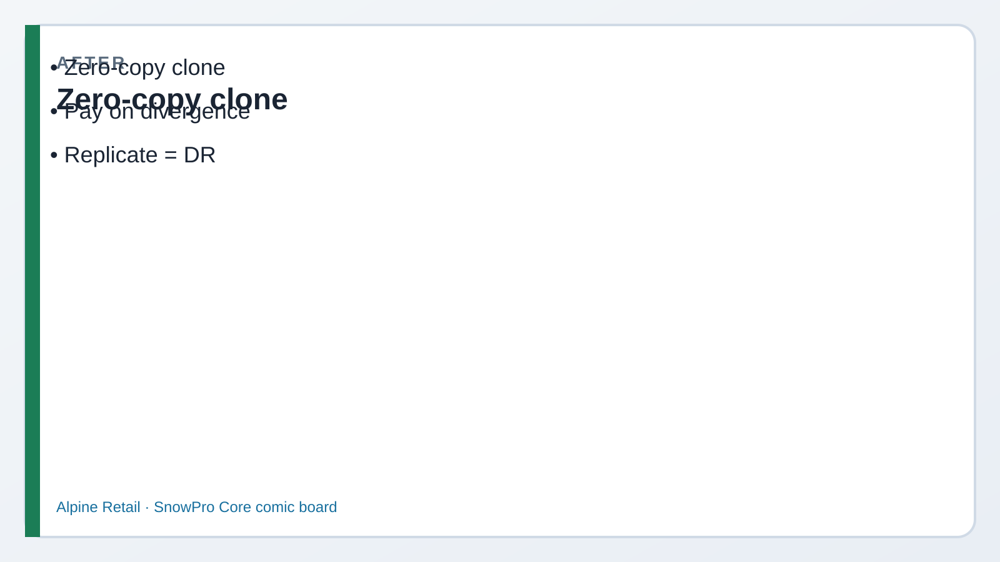

Instant Dev copy without waiting for a byte dump. You will clone table / schema / database,
prove when storage charges start (divergence), and learn primary vs secondary replication
without needing a second production account today.
1
Picture first. Look at BEFORE/AFTER → read the comic → then run tiny SQL.
If a paragraph feels heavy, skip to the next comic strip — Dev explains it out loud for you.
Business problem
Morgan wants a Dev copy of Alpine “by lunch.” Kai suggests COPY INTO everything —
hours of load and double the storage bill. Riley asks about DR across regions.
Solution you will buildCREATE TABLE … CLONE, schema clone, database clone to ALPINE_RETAIL_DEV,
a divergence UPDATE that starts new storage, and commented replication DDL for exam literacy.

Before CSV export for QA.

After Zero-copy clone · replicate for DR.
Episode 17 · Clone day
Morgan wants Dev by lunch. Dev says “don’t copy bytes.”
MorganManager — deadline
I need a safe Dev playground of Alpine before the demo. How long for a full copy?
DevCoach
Seconds, not hours — if we clone. Snowflake points at the same micro-partitions until someone writes and forces new ones. That’s zero-copy.
Clone ≠ share. Clone is a new object you own; share is live access for another account.
See it — clone vs copy vs replicate
Same account
Zero-copy CLONE
New table/schema/DB that starts sharing storage pointers.
CREATE TABLE T2 CLONE T1; Fast · metadata-first
Byte copy
CREATE TABLE AS SELECT / COPY
Immediately materializes new micro-partitions — pay storage now, wait for data move.
CTAS / COPY INTO = real bytes today
When $ starts
Divergence
After clone, shared history is free-ish pointers. When either side writes, new partitions are stored and billed.
UPDATE clone → new MPs original unchanged
Other account
Replication
Primary DB → secondary in another account/region. Refresh keeps it current. Failover promotes secondary.
Often Business Critical for full failover features
Clone privileges — exam trap
Cloning creates a new object. You need privileges to create the target (e.g. CREATE TABLE in the schema)
and ownership/select-style rights on the source as required by Snowflake’s clone rules.
Grants on the source do not automatically make every role able to clone into a privileged place —
think “who can CREATE the new object?”
1 · CloneShared MPsno byte dump yet
2 · WriteDivergenew micro-partitions
3 · BillExtra storageonly the changed parts
Before Step 1
Kai: “Is a clone a backup?”
KaiAnalyst
If I clone CUSTOMERS, am I protected if someone drops the original tomorrow?
SamCompliance
Partially independent object — but Time Travel / Fail-safe on the original is still your recovery story. Clone is for Dev/QA isolation, not a substitute for retention policy.
1 Table clone (zero-copy)
What this does: Instant CUSTOMERS_CLONE pointing at the same data as LAB.CUSTOMERS.
SQL · CREATE TABLE CLONE
USE ROLE ROLE_CORE_LAB_ADMIN;
USE WAREHOUSE WH_CORE_XS;
USE DATABASE ALPINE_RETAIL;
USE SCHEMA LAB;
CREATE OR REPLACE TABLE CUSTOMERS_CLONE CLONE CUSTOMERS;
SELECT COUNT(*) AS CLONE_ROWS FROM CUSTOMERS_CLONE;
✓ Same row count as CUSTOMERS — created in seconds
2 Schema + database clone
What this does: Clones the whole LAB schema, then clones the database into ALPINE_RETAIL_DEV.
SQL · schema & DB clone
CREATE OR REPLACE SCHEMA LAB_CLONE CLONE LAB;
CREATE OR REPLACE DATABASE ALPINE_RETAIL_DEV
CLONE ALPINE_RETAIL;
✓ LAB_CLONE and ALPINE_RETAIL_DEV exist in the account
Before Step 3
Morgan: “When do I start paying double?”
MorganManager — cost
You said zero-copy. So clones are free forever?
RileyPipeline
Until someone writes. UPDATE the clone — Snowflake stores new micro-partitions for the changed data. Unchanged history can still be shared. That’s when the bill grows.
3 Prove divergence (storage starts)
What this does: Changes only the clone; original stays intact — independent objects after write.
SQL · diverge the clone
UPDATE ALPINE_RETAIL.LAB.CUSTOMERS_CLONE
SET FULL_NAME = 'Cloned Name Change'
WHERE CUSTOMER_ID = 1;
SELECT CUSTOMER_ID, FULL_NAME
FROM ALPINE_RETAIL.LAB.CUSTOMERS WHERE CUSTOMER_ID = 1;
SELECT CUSTOMER_ID, FULL_NAME
FROM ALPINE_RETAIL.LAB.CUSTOMERS_CLONE WHERE CUSTOMER_ID = 1;
✓ Original name unchanged; clone shows Cloned Name Change
4 Replication syntax (read only — don’t run blind)
What this does: Shows the exam shape of enabling replication. Needs a second account and often Business Critical for full failover.
SQL · commented (exam awareness)
-- ALTER DATABASE ALPINE_RETAIL
-- ENABLE REPLICATION TO ACCOUNTS <org>.<account>;
--
-- -- On the secondary account:
-- CREATE DATABASE ALPINE_RETAIL
-- AS REPLICA OF <org>.<primary>.ALPINE_RETAIL;
-- ALTER DATABASE ALPINE_RETAIL REFRESH;
✓ You can explain primary (writable) vs secondary (read-only until failover)
Exam presses further — say these out loud
Q1. Clone vs copy — what is “zero-copy”?
Say: Clone creates a new object that initially references the same micro-partitions — no immediate full byte duplication. CTAS/COPY materializes new partitions right away. Storage grows as the clone and source diverge via writes.
Q2. What privileges matter for cloning?
Say: You need rights to create the target object (CREATE TABLE/SCHEMA/DATABASE in the destination) and appropriate access to the source. Cloning doesn’t magically bypass RBAC; ownership of the new object follows normal create rules.
Q3. Primary vs secondary in replication?
Say: Primary is the writable source account/database. Secondary is a replica (typically read-only) refreshed from the primary. Failover promotes a secondary to take writes after an outage/planned cutover.
Q4. Which edition for some failover / HA features?
Say: Many multi-account failover / client-redirect style features require Business Critical (or higher). Don’t claim full HA on Standard. Check current docs, but Core exams expect BC for advanced failover.
Q5. When do clone storage charges start in plain English?
Say: At clone time you mostly pay metadata/pointers for shared history. When either side inserts/updates/deletes, Snowflake writes new micro-partitions — those unique bytes are stored and billed. Unchanged shared history can remain shared.
Priya’s wrap-up (say this out loud)
“Morgan got Dev by lunch: CUSTOMERS_CLONE, LAB_CLONE, and ALPINE_RETAIL_DEV via zero-copy CLONE —
not a BYTE dump. Storage grows after divergence, which I proved with an UPDATE on the clone only.
Replication is a different-account story: enable on primary, create replica, refresh; failover often needs Business Critical.
Outcome: clone vs copy vs replicate sorted for Domain 5.”
Next
Lab 18 — secure shares (provider side) and Marketplace / Clean Rooms awareness.